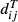
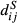
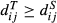

popart: full‐feature software for haplotype network construction
Summary
-
Haplotype networks are an intuitive method for visualising relationships between individual genotypes at the population level.
-
Here, we present popart, an integrated software package that provides a comprehensive implementation of haplotype network methods, phylogeographic visualisation tools and standard statistical tests, together with publication‐ready figure production.
-
popart also provides a platform for the implementation and distribution of new network‐based methods – we describe one such new method, integer neighbour‐joining.
-
The software is open source and freely available for all major operating systems.
Introduction
Haplotype networks are used in the analysis of population genetic data to visualise genealogical relationships at the intraspecific level, as well as to make inference about biogeography and history of populations. Several methods for inferring haplotype networks have been described in the literature (Bandelt, Forster & Röhl 1999; Clement et al. 2002; Cassens, Mardulyn & Milinkovitch 2005; Manolopoulou et al. 2011). Various of these have been implemented in software packages such as tcs (Clement, Posada & Crandall 2000), network (http://www.fluxus-engineering.com), splitstree (Huson & Bryant 2006) and pegas (Paradis 2010), and these methods have been used extensively in the literature (tcs, Clement, Posada & Crandall 2000; Clement et al. 2002; 4937 citations; median‐joining, Bandelt, Forster & Röhl 1999; 3735 citations, according to Google Scholar, as of 15 April 2014). However, there has been no single software package which implements all of the standard methods. Moreover, most of these methods are only available in software packages that are no longer maintained (tcs) or are available for either Microsoft Windows (e.g. arlequin, Excoffier, Laval & Schneider 2005; network; dnasp, Librado & Rozas 2009) or Mac OS X (e.g. genodive, http://www.bentleydrummer.nl/software/software/GenoDive.html), but not both. Finally, users are required to produce networks with one software package and then use another (e.g. hapstar, Teacher & Griffiths 2011) to produce publication‐quality figures from these networks. Worse still, many users produce figures ‘manually’ using graphics editing software, a process that is both time‐consuming and error‐prone.
Here, we present popart (Population Analysis with Reticulate Trees), a software package for population genetics analysis using haplotype networks that is designed to be user‐friendly and feature‐rich and runs on Microsoft Windows, LINUX and Mac OS X. popart includes implementations of minimum spanning, median‐joining and tcs network methods and provides a powerful and user‐friendly framework for the implementation and distribution of new methods. In addition to haplotype network construction, popart includes amova (Excoffier, Smouse & Quattro 1992), Tajima's D statistic (Tajima 1989), several other basic statistics that are useful for population genetics analyses, as well as tools for visualising the geographical distribution of genetic data using a map‐based interface. We include a brief description of the haplotype inference methods developed by other authors that have been implemented in popart, and introduce a new method, integer neighbour‐joining (IntNJ). We demonstrate the use of these methods and some of the other features available in popart using human mitochondrial sequence data recently published by Knapp et al. (2012).
Haplotype network inference and visualisation
The primary function of popart is the inference and visualisation of genetic relationships among intraspecific sequences. popart takes sequence data as input and features several methods for inferring relationships designed for the analysis of population genetic data. popart allows users to use three popular haplotype network inference methods: tcs (Clement et al. 2002), minimum spanning networks and median‐joining networks (MSN and MJN, respectively; (Bandelt, Forster & Röhl 1999). We have implemented several new methods in popart and describe one of these, integer neighbour‐joining (IntNJ), below.
Once a haplotype network has been inferred, it is drawn in popart's network viewer panel using the spring embedded layout described by Tunkelang (1999). The network viewer panel allows users to modify various aspects of the network's appearance, including colours, fonts and positions of nodes and labels. The number of mutations represented by the network's edges can be displayed using either ‘one‐step edges’ (edges of length 1 joined through intermediate nodes of degree 2, which represent unsampled sequences), as hatch marks along edges, or as labels giving the number of mutations. Users can also display auxiliary information (traits) associated with haplotype sequences, such as geographical locations where samples were collected or phenotypic information. This information is displayed as pie charts at the nodes of the network, showing relative frequencies of the different traits associated with a particular sequence. Images of networks shown in the network panel can be exported as full‐colour, high‐resolution images in PNG, SVG and PDF formats.
Example: human migration across oceania
For the purpose of demonstrating the use of popart, we present networks inferred from the human mitochondrial sequence data of Knapp et al. (2012), originally used to explore human migration across Remote Oceania. Despite the relative recency of this event, both the origin of Remote Oceania populations and the order of colonisation of islands in the region remain controversial (Pierson et al. 2006; Wollstein et al. 2010; Soares et al. 2011; Delfin et al. 2012). Recent attempts to investigate migration across Oceania have begun to look at ancient DNA sequences from animals, including chickens Thomson et al. (2014b) and rats Thomson et al. (2014a), whose dispersal was mediated by humans.
Haplotype network construction
popart includes three popular haplotype network inference methods developed by other authors: the MSN and MJN methods of (Bandelt, Forster & Röhl 1999), and the tcs method of (Clement et al. 2002). Networks constructed using the MSN method contain all edges that appear in a minimum spanning tree of the sequences, that is all networks containing only nodes that represent input sequences connected by edges, with no cycles with the shortest possible total length (where edge lengths are equal to pairwise distances between sequences). Figure 1 gives the MSN for the mitochondrial data.
A shortcoming of the MSN method is that it does not attempt to infer any additional nodes or ancestral sequences, even when there might be considerable evidence for the existence of such nodes. Note, for example, the complex network structure on the left‐hand side of the figure. With the addition of a single (inferred) ancestral node, this tangle becomes a straightforward radiation, as in the MJN (Fig. 2). This method, described in detail in Bandelt, Forster & Röhl (1999) and Huson, Rupp & Scornavacca (2011), includes nodes to represent inferred (unsampled) sequences by iteratively adding ‘median’ sequence vectors when these nodes shorten the total length of the network.
The tcs network (Fig. 3) is constructed using an agglomerative approach where clusters are progressively combined with one or more connecting edges; for details see Clement et al. (2002). For these data, the tcs and MJN networks are similar, both suggesting a radiation of sequences from Remote Oceania and Madagascar from an ancestral sequence.
One important caveat with all existing haplotype network methods is that they do not explicitly involve evolutionary models when constructing the network representations. In all but the simplest of cases, it would be unwise to interpret the networks as reconstructions of evolutionary history, at least not without corroborating evidence.
The haplotype networks do provide, however, a concise and accessible representation of the data themselves, one aspect which is often lost in methods heavily dependent on model‐based inference. Once the mutations are labelled, the entire data set can be reconstructed from the network. In this capacity, haplotype networks provide useful summary statistics for further tests.
A new method: integer neighbour‐joining
Integer neighbour‐joining (IntNJ) is a technique for constructing haplotype networks with a controlled level of reticulation. Like the reticulogram method of t‐rex (Makarenkov 2001), we start with an inferred tree and then proceed to add edges. The methods differ in the way that IntNJ constrains networks to have integer edge lengths and in the criteria used to add additional edges. The integer restriction is particularly important for the kinds of low‐divergence data sets which are often analysed using haplotype networks.
The IntNJ method begins by computing a matrix of Hamming distances between unique haplotype sequences (Fig. 4a). These sequence distances are used to infer a tree (Fig. 4b) using the neighbour‐joining method (Saitou & Nei 1987). The tree forms the backbone of the network. We use integer linear programming to minimise the total length of the tree (Fig. 4c) subject to the following two conditions: guarantee that
(N1) The distance in the network (tree)  between nodes representing sampled sequences i and j is at least equal to the distance  between the two sequences: .
(N2) Edge lengths are non‐negative integers.
The excess for a pair i,j of taxa is the difference between the distance in the network and the distance between the sequences, which we denote
By property (N1), the excess is always non‐negative. Our goal is to add additional edges to the network so that more pairs get excess zero. However, we do this in such a way that (N1) and (N2) hold, so that the number of additional edges is minimised.
Following Chung et al. (2001) we adopt a heuristic, iterative strategy. We consider pairs i,j of taxa in order, starting with the pair which has the largest excess. For this pair, we consider all ways of inserting a new path into the network in a way that reduces their excess to zero, does not violate (N1) and (N2) and uses as few additional edges as possible. After adding this path, we update the distance calculations in the network and continue until all pairs have excess zero (Fig. 4c).
In practice, we found that removing the excess for all pairs in this way sometimes led to networks which were unnecessarily complicated. For this reason, we implemented a parameter which determines the relative importance of excess versus network complexity. Let α be a parameter between 0 and 1. Let
If this sum decreases, we carry out the modification. Otherwise, we continue to the next pair.
The value for α acts like a regularisation parameter. If α = 0, then no additions will be made to the network and we will recover the original, integer‐weighted tree. If α = 1, then we will recover a network which exactly represents the sequence distances but may be quite complicated as a consequence. As with all forms of regularisation, there is no completely objective procedure for choosing α, especially since we are not assuming any model of error in the sequence distances. Instead, the parameter can be controlled directly by the user, depending on context. Figure 5 shows IntNJ networks for the mitochondrial data of Knapp et al. (2012) with a range of α values.

Visualisation of the geographical distributional recombination of sequence data
popart users can toggle between the network visualisation panel and an interactive map panel that displays geographical positions of sequences if this information is available. Users can zoom in and out of the map and can pan to different map locations. The map interface was implemented using the Marble library (http://marble.kde.org), and its appearance can be customised using several pre‐defined themes.
popart can use several different types of geographical data in order to place sequences on the map panel. First, geographical locations at which individual sequences were collected can be used to cluster sequences using the k‐means algorithm with the great circle distances between locations. Secondly, users can associate traits (as described above) with sets of sequences and can include geographical locations for each trait (i.e. rather than including locations for each sequence). Finally, if no geographical locations are explicitly given, but trait names describe geographical locations, users can search for these locations in the map interface. If the user is unhappy with the locations found for trait groups, these can be manually corrected in the map interface. As with the network panel, users can export full‐colour images (e.g. Fig. 6) from the map panel in PNG, SVG and PDF formats.
Population genetics statistics
Many statistical analysis tools are now available for population genetics analyses. Currently, popart provides a small number of the most commonly used statistics, including Tajima's D statistic (Tajima 1989), amova (Excoffier, Smouse & Quattro 1992), nucleotide diversity, segregating sites and parsimony‐informative sites. We will continue to add further statistical analysis tools in future releases.
File formats
popart opens sequence alignments in nexus (Maddison, Swofford & Maddison 1997) and phylip formats (including relaxed as well as classic sequential and interleaved variants). Using nexus format allows the user to include additional information. Sequence sampling locations can be included as a GeoTag block (Appendix S1). Geographical, phenotypic or other traits associated with sequences can also be included in nexus files in a Traits block (Appendix S1). popart also uses nexus format to save and load networks, including layout, colours and fonts changed by users.
If users choose to use phylip format sequence alignments, they can still associate geographical locations or traits information with their sequences by interactively importing data in various tabular formats (tab‐ or space‐delimited text files or csv files). However, data in these files are somewhat less flexible than in the equivalent nexus blocks.
Future directions and distribution
popart was envisioned as a platform for implementation of new population genetics analysis methods. We will continue to use it to implement new, better methods for inferring haplotype networks. We also intend to continue to add features that make analysis of population genetic data easier. Currently, we are working on implementing the samova algorithm to cluster sequences geographically. We also have plans to visualise temporal distribution of sequences using the method of Prost & Anderson (2011). We maintain a mailing list and actively implement features requested by users.
popart is freely available as both a stable release and beta release from http://popart.otago.ac.nz. Source code is additionally available on github from https://github.com/jessicawleigh/popart. Manuals in epub and PDF formats are available from both http://popart.otago.ac.nz and https://github.com/jessicawleigh/popart. We intend to release a new stable version roughly annually, and to implement and test new features more frequently in regular beta releases. All releases will be distributed as Microsoft Windows and Mac OS X executables as well as source files.
Acknowledgements
We wish to thank Lisa Matisoo‐Smith and Michael Knapp for allowing us to demonstrate popart using their human mitochondrial DNA sequence alignment. The development of popart was funded by the Allan Wilson Centre Imaging Evolution Initiative.
Data accessibility
Software and manuals deposited in the Dryad repository: http://datadryad.org/resource/doi:10.5061/dryad.4n4j1 (Leigh and Bryant 2015)